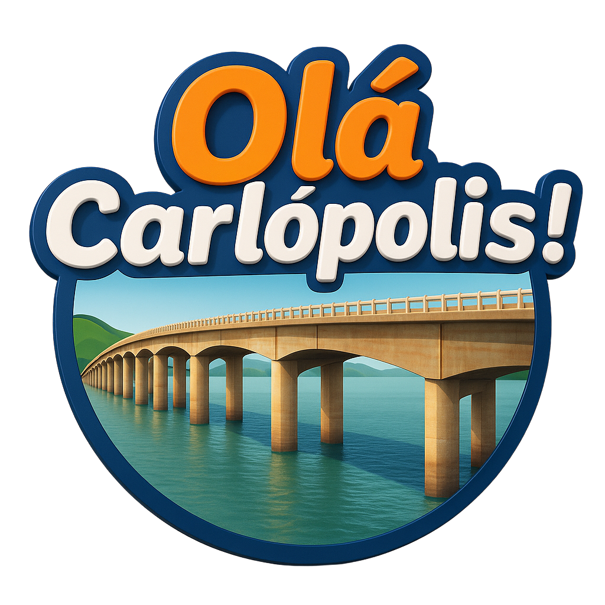

Preparando o Olá Studio
Validando seu acesso protegido.

Validando seu acesso protegido.
Nesta primeira etapa, o acesso é exclusivo do Admin Master.
O Olá Studio permanece protegido e ainda não foi liberado.
Voltar ao painelEscolha um estilo, organize os arquivos e acompanhe cada etapa da renderização.
Seu primeiro vídeo aparecerá aqui.
O storyboard abaixo representa o mesmo plano que será enviado ao FFmpeg.
Veja a última exportação ou gere uma prévia leve depois dos ajustes.
Reordene, ajuste a duração e escolha a transição de cada trecho.
Não feche esta tela durante o envio.
Corrija somente o que foi reconhecido incorretamente. Os tempos da fala serão preservados.
Confira o resultado antes de baixar.
Ledger preparado para créditos, reservas e estornos.
Nenhum consumo registrado.